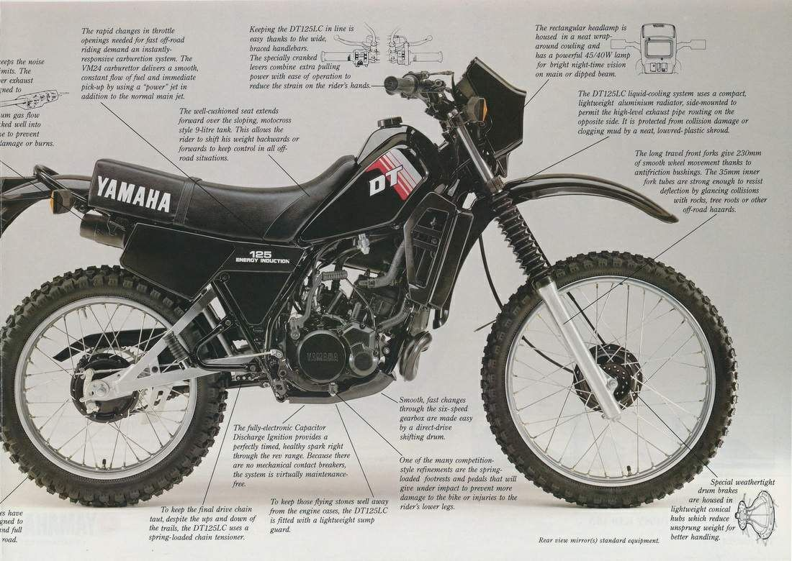

Documento 02
De las calles colombianas a la memoria historica
La Yamaha DT fue una de las motocicletas que ganó popularidad en Colombia durante los años setenta y ochenta. Sin embargo, su historia también quedó relacionada con episodios de violencia asociados al narcotráfico.
Para comprender esta relación, es necesario conocer los acontecimientos en los que aparece mencionada y distinguir los hechos documentados de los relatos populares que surgieron con el paso del tiempo.